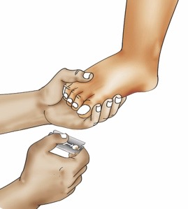
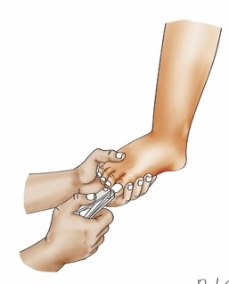
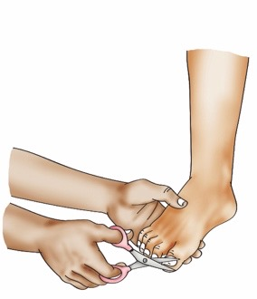
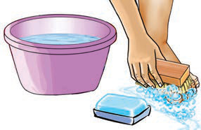
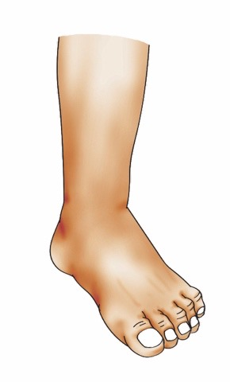

Nakata na kusafisha kucha.
Paka wa katuni akionyesha ishara ya kuzungumza na kuelekeza maelezo kuhusu kukata na kusafisha kucha za miguu.

Ninakata na kusafisha kucha za miguu kwa kutumia vifaa mbalimbali.
Vidole vya miguu vyenye kucha ndefu.
Imeoneshwa picha ya vidole vya mguu vyenye kucha ndefu zinazohitaji kukatwa.

Ninakata kucha za vidole vya miguu kwa kutumia wembe. Imeoneshwa picha ya mkono ukishika mguu na kukata kucha za vidole vya mguu kwa kutumia wembe.
Ninakata kucha za vidole vya miguu kwa kutumia kikata kucha. Imeoneshwa picha ya mkono ukishika mguu na kukata kucha za vidole vya mguu kwa kutumia kikata kucha.
Ninakata kucha za vidole vya miguu kwa kutumia mkasi. Imeoneshwa picha ya mkono ukishika mguu na kukata kucha za vidole vya mguu kwa kutumia mkasi.
Ninasafisha kucha za vidole vya miguu kwa brashi, maji safi na sabuni. Imeoneshwa picha ya beseni la maji, sabuni na brashi vinavyotumika kusafisha miguu.
Kucha za vidole vya miguu zilizokatwa vizuri na kusafishwa kwa maji safi. Imeoneshwa picha ya mguu wenye vidole vilivyo tayari kusafishwa na kukatwa kucha.Swali
Kwa nini ni muhimu kukata kucha za miguu?